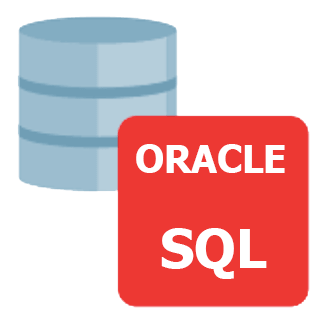
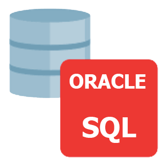

Como foi meu primeiro contato com a área de TI
No ano de 2015-2017 ganhei uma bolsa de um programa de desenvolvimento de software do governo do meu estado com parceria com empresas industriais locais no ramo de P&D. Foi exatamente aí que a minha vida mudou... conheci outra perspectiva sobre mundo e como a tecnologia poderia mudar minha vida de várias formas, tanto pessoal, financeira e como uma futura profissional do ramo. No programa foi dividido em duas partes, a primeira obtive conhecimentos básicos de informática aplicada e desenvolvimento web, para quem nunca tinha ligando um computador, foi tudo meio que muito complicado, tive que correr atrás do prejuízo, pois vim de uma família muito humilde que trabalhava somente para ter o que comer.... logo no início da primeira fase foi dito quem tivesse boas notas e se classificasse entre os 50 melhores alunos de 400 alunos, ganhariam uma bolsa e passariam para segunda fase para poder colocar em prática tudo que aprendemos na fase anterior. Minhas notas não eram tão boas em comparação aos demais que eu consideravam super inteligentes e eu não era tão inteligente, tanto que meu professor de programação me disse uma vez quando recebi a minha prova de lógica, "não achei que você se sairia bem, então vença através do esforço e disciplina ", meu raciocínio era muito lento, mas mesmo assim com muito esforço consegui passar para a 2 fase, foi um dos melhores momentos da minha vida. Mas não era só essa barreira que impedia minha caminhada na programação... Eu não era muito confiante e fugia de problemas e isso me sabotava, tanto que isso foi o que mais ainda atrasou minha caminhada. Então em 2021 resolvi mudar minha vida, perdi mais 30 kilos, criei um linkedin, fui atrás das tecnologias que estão em alta, conseguir realmente me encontrar na área de desenvolvimento de software e obtive toda instrução no programa de formação de dados e tecnologia no programa Transforme-se Da serasa Experian que agredeço imensamente por todo apoio. Hoje curso análise e desenvolvimentos de sofware, minhas atuais habilidades resumidamente estão focadas em ter uma boa base de estruturas dados, construção de APIs e Frontend, quero passar por todo o ciclo de desenvolvimento de software, buscando inicialmente em uma posição de desenvolvedora, ajudando, auxiliando a todos para que daqui alguns anos eu me torne uma especialista/ arquiteta de software.
Lista de coisas que gosto de fazer
- ir a academia
- dançar
- passear com minha família
- viajar
- conhecer lugares novos
Meu vídeo clipe de música favorito
Clique para verMeus conhecimentos


 


Meus contatos